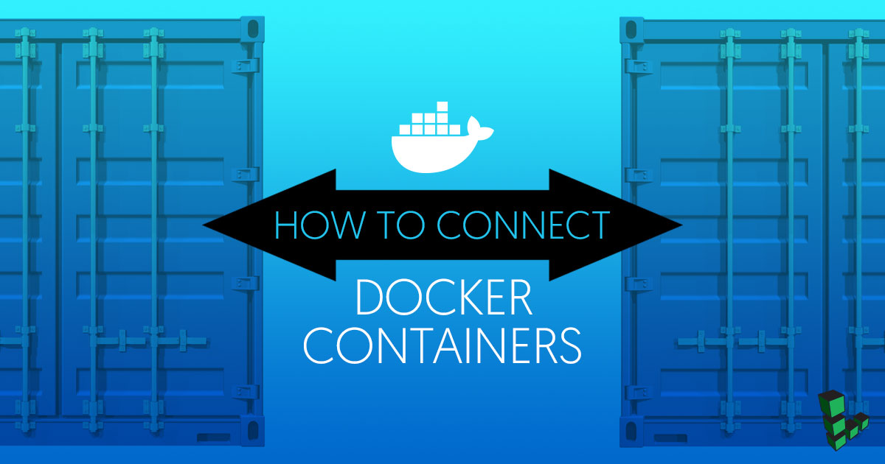

How to Connect Docker Containers
Updated by Jared Kobos Written by Jared Kobos

When using Docker to containerize your applications, it is common practice to run each component of the application in a separate container. For example, a website might have a web server, application, and database, each running in its own container.
Configuring the containers to communicate with each other and the host machine can be a challenge. This guide will use a simple example app to demonstrate the basics of Docker container communication. The app will consist of a Node.js app that reads data from a PostgreSQL database.
Before You Begin
Install Docker CE
You will need a Linode with Docker CE installed to follow along with the steps in this guide.
These steps install Docker Community Edition (CE) using the official Ubuntu repositories. To install on another distribution, see the official installation page.
Remove any older installations of Docker that may be on your system:
sudo apt remove docker docker-engine docker.ioMake sure you have the necessary packages to allow the use of Docker’s repository:
sudo apt install apt-transport-https ca-certificates curl software-properties-commonAdd Docker’s GPG key:
curl -fsSL https://download.docker.com/linux/ubuntu/gpg | sudo apt-key add -Verify the fingerprint of the GPG key:
sudo apt-key fingerprint 0EBFCD88You should see output similar to the following:
pub 4096R/0EBFCD88 2017-02-22 Key fingerprint = 9DC8 5822 9FC7 DD38 854A E2D8 8D81 803C 0EBF CD88 uid Docker Release (CE deb)Add the
stableDocker repository:sudo add-apt-repository "deb [arch=amd64] https://download.docker.com/linux/ubuntu $(lsb_release -cs) stable"Update your package index and install Docker CE:
sudo apt update sudo apt install docker-ceAdd your limited Linux user account to the
dockergroup:sudo usermod -aG docker $USERNote
After entering theusermodcommand, you will need to close your SSH session and open a new one for this change to take effect.Check that the installation was successful by running the built-in “Hello World” program:
docker run hello-world
Example Node.js Application
The example app used throughout this guide will be a simple Node.js app that will read “Hello world” from a PostgreSQL database and print it to the console. In this section, you will build and test the app on your Linode without using containers.
Install and Configure PostgreSQL
Update your system:
sudo apt update && sudo apt upgradeInstall PostGreSQL:
sudo apt install postgresql postgresql-contribChange the
postgresuser’s password:sudo passwd postgresSet a password for the
postgresdatabase user:su - postgres psql -d template1 -c "ALTER USER postgres WITH PASSWORD 'newpassword';"Create a database for the example app and connect to it:
createdb nodejs psql nodejsAdd “Hello world” to the database:
nodejs=# CREATE TABLE hello (message varchar); nodejs=# INSERT INTO hello VALUES ('Hello world'); nodejs=# \qCreate a dump of the database for later use:
pg_dumpall > backup.sqlSign out as the
postgresLinux user:exitCopy the data dump to your home directory:
sudo cp /var/lib/postgresql/backup.sql ~/.Since you will be connecting to this database from a container (which will have an IP address other than
locahost), you will need to edit the PostgreSQL config file to allow connections from remote addresses. Open/etc/postgresql/9.5/main/postgresql.confin a text editor. Uncomment thelisten_addressesline and set it to ‘*’:- /etc/postgresql/9.5/main/postgresql.conf
-
1 2 3 4 5 6 7#------------------------------------------------------------------------------ # CONNECTIONS AND AUTHENTICATION #------------------------------------------------------------------------------ # - Connection Settings - listen_addresses = '*' # what IP address(es) to listen on;
Enable and start the
postgresqlservice:sudo systemctl enable postgresql sudo systemctl start postgresql
Create a Hello World App
Install Node and NPM:
curl -sL https://deb.nodesource.com/setup_8.x | sudo -E bash - sudo apt-get install nodejsNavigate to the home directory and create a directory:
cd mkdir app && cd appUsing a text editor, create
app.jsand add the following content:- app.js
-
1 2 3 4 5 6 7 8 9 10 11 12 13 14 15 16const { Client } = require('pg') const client = new Client({ user: 'postgres', host: 'localhost', database: 'nodejs', password: 'newpassword', port: 5432 }) client.connect() client.query('SELECT * FROM hello', (err, res) => { console.log(res.rows[0].message) client.end() })
This app uses the
pgNPM module (node-postgres) to connect to the database created in the previous section. It then queries the ‘hello’ table (which returns the “Hello world” message) and logs the response to the console. Replace'newpassword'with thepostgresdatabase user password you set in the previous section.Note
Thepgmodule can also use environment variables to configure the client connection. This is the recommended option for production apps. Read more about environment variables in the node-postgres documentation.Install the
pgmodule:npm install pgTest the app:
node app.jsIf the database is configured correctly, “Hello world” will be displayed on the console.
Connect Container to Docker Host
This section illustrates a use case where the Node.js app is run from a Docker container, and connects to a database that is running on the Docker host.
Set Up Docker Container
Return to your home directory:
cdCreate a Dockerfile to run the Node.js app:
- Dockerfile
-
1 2 3 4 5 6 7FROM debian RUN apt update -y && apt install -y gnupg curl RUN curl -sL https://deb.nodesource.com/setup_8.x | bash - && apt install -y nodejs COPY app/ /home/ ENTRYPOINT tail -F /dev/null
The image built from this Dockerfile will copy the
app/directory to the new image. Editapp.jsto allow the app to connect to thedatabasehost instead oflocalhost:- app/app.js
-
1 2 3 4 5 6 7const client = new Client({ user: 'postgres', host: 'database', database: 'nodejs', password: 'newpassword', port: 5432 })
Build an image from the Dockerfile:
docker build -t node_image .
Connect Container to Database
Docker automatically sets up a default bridge network, accessed through the
docker0network interface. Useifconfigoripto view this interface:ifconfig docker0The output will resemble the following:
The internal IP address of the Docker host (your Linode) is 172.17.0.1.docker0 Link encap:Ethernet HWaddr 02:42:1e:e8:39:54 inet addr:172.17.0.1 Bcast:0.0.0.0 Mask:255.255.0.0 inet6 addr: fe80::42:1eff:fee8:3954/64 Scope:Link UP BROADCAST RUNNING MULTICAST MTU:1500 Metric:1 RX packets:3848 errors:0 dropped:0 overruns:0 frame:0 TX packets:5084 errors:0 dropped:0 overruns:0 carrier:0 collisions:0 txqueuelen:0 RX bytes:246416 (246.4 KB) TX bytes:94809688 (94.8 MB)Allow PostgreSQL to accept connections from the Docker interface. Open
/etc/postgresql/9.5/main/pg_hba.confin a text editor and add the following line:- /etc/postgresql/9.5/main/pg_hba.conf
-
1host all postgres 172.17.0.0/16 password
Since 172.17.0.1 is the IP of the Docker host, all of the containers on the host will have an IP address in the range 172.17.0.0/16.
Restart the database:
sudo systemctl restart postgresqlStart the container:
docker run -d --add-host=database:172.17.0.1 --name node_container node_imageThe
--add-hostoption defines adatabasehost, which points to the IP address of the Docker host. Declaring thedatabasehost at runtime, rather than hard-coding the IP address in the app, helps keep the container reusable.From within the container, use
pingto test the connection to thedatabasehost:docker exec -it node_container ping databaseEach Docker container is also assigned its own IP address from within the 172.17.0.0/16 block. Find the IP address of this container with
ip:docker exec -it node_container ip addr show eth0You can test this connection by pinging this address from the Docker host.
Run the app:
docker exec -it node_container node home/app.js
If the configuration was successful, the program should display the “Hello world” console output as before.
Connect Two Containers
In this section, both the app and database will be running in separate containers. You can use the official postgres image from Docker Hub and load in the SQL dump created earlier.
CautionYou should not store production database data inside a Docker container. Containers should be treated as ephemeral entities: if a container unexpectedly crashes or is restarted, all data in the database will be lost.
Stop and remove the Node.js container:
docker stop node_container docker rm node_containerPull the
postgresimage:docker pull postgresMake sure your
backup.sqlfile is in your current working directory, then run thepostgresimage:docker run -d -v `pwd`:/backup/ --name pg_container postgresThe
-voption mounts your current working directory to the/backup/directory on the new container.The new container will automatically start the postgres database and create the postgres user. Enter the container and load the SQL dump:
docker exec -it pg_container bash cd backup psql -U postgres -f backup.sql postgres exitRun the node image again. This time, instead of
--add-host, use the--linkoption to connect the container to pg_container:docker run -d --name node_container --link=pg_container:database node_imageThis will link the
pg_containerunder the hostnamedatabase.Open
/etc/hostsin node_container to confirm that the link has been made:docker exec -it node_container cat /etc/hostsThere should be a line similar to the following:
- /etc/hosts
-
1172.17.0.2 database pg_container
This shows that
pg_containerhas been assigned to the IP address 172.17.0.2, and is linked to this container via the hostnamedatabase, as expected.Since the Node.js app is still expecting to connect to a PostgreSQL database on the
databasehost, no further changes are necessary. You should be able to run the app as before:docker exec -it node_container node home/app.js
Using Docker Compose
Using the --link or --host options every time you launch your containers can be cumbersome. If your server or any of the containers crash, they must be manually reconnected. This is not an ideal situation for any application that requires constant availability. Fortunately, Docker provides Docker Compose to manage multiple containers and automatically link them together when they are launched. This section will use Docker Compose to reproduce the results of the previous section.
NoteFor a more comprehensive explanation of Docker Compose and how to writedocker-compose.ymlconfiguration files, see our complete Docker Compose guide.
Install Docker Compose:
sudo curl -L https://github.com/docker/compose/releases/download/1.17.0/docker-compose-`uname -s`-`uname -m` -o /usr/local/bin/docker-compose sudo chmod +x /usr/local/bin/docker-composeIn the same directory as your Dockerfile, create a
docker-compose.ymlfile with the following content:- docker-compose.yml
-
1 2 3 4 5 6 7 8 9 10 11 12 13 14 15 16 17 18 19 20 21 22 23 24 25version: '3' services: database: image: postgres container_name: pg_container volumes: - pgdata:/var/lib/postgresql/data app: build: . container_name: node_container links: - database environment: - PGPASSWORD=newpassword - PGUSER=postgres - PGDATABASE=nodejs - PGHOST=database - PGPORT=5432 depends_on: - database volumes: pgdata: {}
When you run Docker Compose with this file, it will create the
pg_containerandnode_containerfrom the previous section. As before, the database container will use the official PostgreSQL image, while the app container will be built from your Dockerfile. Thelinksentry serves the same function as the--linkoption in theruncommand used earlier.Docker Compose also allows you to set up environment values, so you can simplify the app to use these rather than having the values hard-coded. Edit
app.jsto remove these values:- app.js
-
1 2 3 4 5 6 7 8 9 10 11const express = require('express') const { Client } = require('pg') const client = new Client() client.connect() client.query('SELECT * FROM hello', (err, res) => { console.log(res.rows[0].message) client.end() })
Remove the previous containers:
docker rm -f node_container pg_containerUse Docker Compose to bring up the containers:
docker-compose up -dLoad the example data into the new container:
docker cp backup.sql pg_container:/ docker exec -it pg_container psql -U postgres -f backup.sql postgresRun
app.jsfrom the app container:docker exec -it node_container node home/app.js
The app should run as before.
Conclusion
By default, Docker automatically assigns an IP address to each container and to the Docker host. You can manually connect services between containers by using these addresses (assuming that your firewall allows the connection).
However, Docker also provides a number of convenient wrappers around these connections to help you speed up and simplify the connection process. You can connect your Docker host to a container with a unique hostname, or directly link two containers. Using Docker Compose can simplify this process even further by allowing you to declare connections in the docker-compose.yml file so that they are automatically established when the containers are brought up.
There are other connection options that were not covered in this guide. For example, you can run a container using --net="host", which will share that container’s network stack with the Docker host: localhost on the container will point to localhost on the Docker host. You can also expose ports on each Docker container, or configure the default bridge network for more flexibility. For a more in-depth discussion of these options, see the links in the More Info section below.
More Information
You may wish to consult the following resources for additional information on this topic. While these are provided in the hope that they will be useful, please note that we cannot vouch for the accuracy or timeliness of externally hosted materials.
Join our Community
Find answers, ask questions, and help others.
This guide is published under a CC BY-ND 4.0 license.